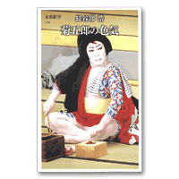

Books for Becoming Better Acquainted with Otowaya
Index > Hasebe Hiroshi, Kikugoro no Iroke (The Seductiveness of Kikugoro)
Hasebe Hiroshi, Kikugoro no Iroke (The Seductiveness of Kikugoro)
Bungei Shunju, 2007Kikugoro VII: The Roots of Seductiveness and the Pressures of a Great Name
As the author states in his postface, this book offers a critique of the actor Kikugoro as well as providing a commentary to leading items in the Kabuki repertory. This is a book that can be enjoyed by everyone from readers already well acquainted with Kabuki and with Kikugoro to those who are still novices in the field of Kabuki.
The first part of the book centres on the hereditary name 'Kikugoro', with the author alluding to the actor who currently holds this name and to successive generations of actors in the Onoe family. The first chapter, entitled Shumei e no Michi (The Path to Succession) is particularly noteworthy. The author describes how Kikugoro requested Onoe Shoroku for instruction when he was still a boy and felt that he was not advancing as he should, and how he, to a far greater extent than children today, ardently devoured theatrical presentations during puberty, when his voice was changing and he was unable to appear on the stage. Kikugoro is an actor disinclined to display his enthusiasm and passion openly, and for this reason the quotes from Kikugoro are invaluable for the light they shed on the passion that he directed to his stage performances during his youth. The circumstances leading up to the name succession as described by Kikugoro clearly nonplussed the author and surprised his son, Kikunosuke, who was present at the interview. He suggests that the schemer behind the succession was his father, Onoe Baiko, that his father opened the way to his assumption of the name by ensuring that he made no enemies in the Kabuki world, and that his father's life was dedicated to enabling him to assume the name of Kikugoro. Whether or not this is an accurate portrayal of Onoe Baiko is hard to say. But one senses nevertheless the unfathomable depths of the world of Kabuki, depths that we as spectators can scarcely imagine, from the weight of the name Kikugoro that caused the current Kikugoro to think in this way, and from the weight of Baiko's own life.The second part of the book focuses on the roles in which the current Kikugoro excels and is based on various stories recounted by the actor and on the author's own criticism. As mentioned at the outset, the method that involves looking back at the roles in which Kikugoro is renowned and approaching these roles from a variety of perspectives including the actors' own stories and recollections and the author's theatrical criticism serves as a commentary on the works and the roles. Dashing young male roles such as Torazo and Sakuramaru, scoundrel roles such as Benten Kozo and Ojo Kichisa, stylish male roles such as Sukeroku and Gosho no Gorozo are just some of the roles featured in this context. As suggested by the title of book, the idea of 'seductiveness' is the motif that runs through all these roles. As an actor Kikugoro has a wide range of roles that he performs and the mood he evokes varies depending on the role. Indeed, this is generally considered to be one of his major attractions. However, this book makes one aware that the 'seductiveness' possessed by Kikugoro is the feature that pervades every role he undertakes.
| ↑ TOP |
Copyright © Otowaya All Rights Reserved.